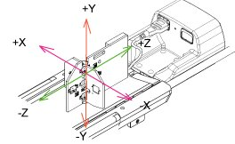
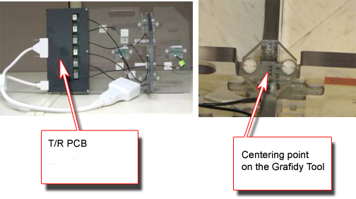
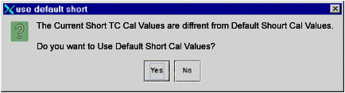
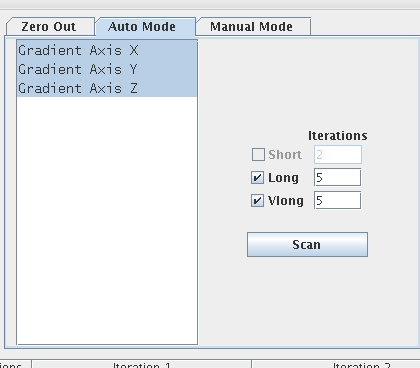
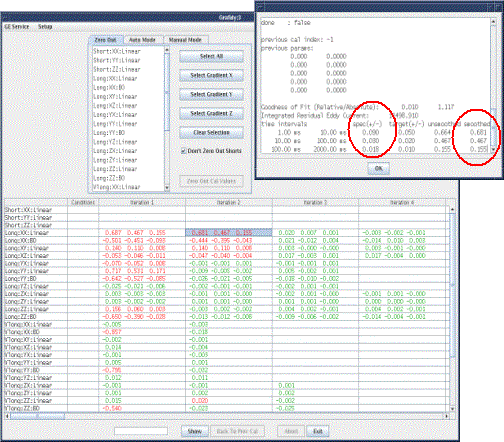
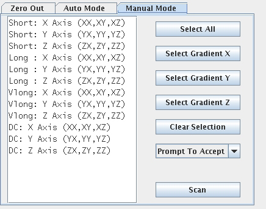
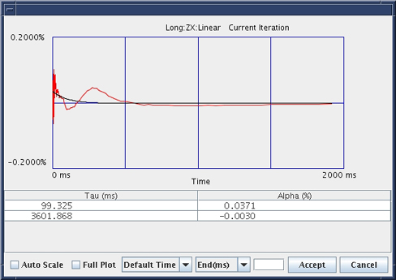
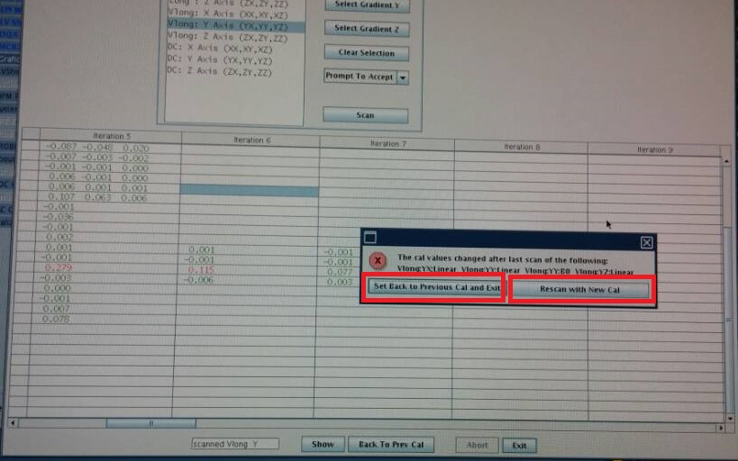

Grafidy3 Procedure
Prerequisites
1 Hardware Set-Up
Procedure
- Unfold the 6-channel grafidy fixture and lock the arms into place (90o from center plate).
- Connect Hypertronics cable to T/R board and use screws to secure. Place the fixture at the front (Head coil end) of the MR table with the connection box toward the bore.
- Plug the Hypertronics connector into the Port A. SeeFigure 1 . (The Green Coil ID light will come on.)
Figure 1. Grafidy Hardware Setup

- Center the laser cross hairs on top of the fixture (As shown
in Figure 2) . Landmark the system and press Advance to Scan.
Figure 2. Grafidy Tool And The Centering Point

2 Running Grafidy 3
Procedure
- Start the Grafidy 3 tool.
-
Starting non-proprietary service tools: From the Common Service Desktop, select Calibration, Grafidy3 from the calibration menu, and select Click here to start this tool to start the procedure.
-
- If you receive the message shown inFigure 3 about “Short TC Cal Values”,
click Yes.
Figure 3. Default Short Cal Values Popup

- Click on the Auto Mode tab. See Figure 4. All three-coil axes will be selected. Click the Scan button to start the calibration. (When the scan is active, you can
stop it by pressing the Abort button and the
“STOP” button on keyboard.)
Figure 4. Auto Mode Setup

note:When in Auto/Manual Mode, a number of signal checks are performed to ensure the proper state of the grafidy fixture. The following signals are examined from every channel and an error is reported if a problem is found. The signals are as follows:
-
Position.
-
SNR.
-
Signal Saturation.
-
- (Only for LCCw magnet with BRM2) When did Z axis very long calibration
in auto mode, will receive the message shown in Figure 5
Figure 5. Waiting message
- If you receive the message about “Short TC Cal
Values”, click Yes. See Figure 6.
Figure 6. Default Short Cal Values Popup

- The Grafidy 3 software runs multiple scans to bring each term
into specification. It iterates up to the maximum specified (default
is 5 iterations). The WHOLE or ZOOM mode usually takes about 2 hours.
As each component finishes a scan/analysis iteration, the residual of the eddy current of the measurement displays in the results table. The results are color-coded, see Table 6.
- Review the numeric output values from the auto mode scan. Verify
that the results of final iteration for each component are below specs
(green). SeeFigure 7 for help in reading output values.
Figure 7. Reading The Output : The specs and the Actual values (Smoothed) are shown circled.

- If a component is not in spec after the maximum number of iterations you may need to use manual mode to calibrate that component. See Manual Mode.
3 Manual Mode
Use Manual Mode when Auto Mode fails to bring one or more of the terms into specification. Manual Mode lets you iterate through the process yourself, and decide when to stop.
Procedure
- Select the [Manual Mode] tab.Figure 8 shows this.
Figure 8. Manual Mode Tab

- Select the desired terms, and then press Scan.
- If the “Prompt To Accept” mode is active, after
the scan is complete, a graph of the results will pop up (see Figure 9). In order to learn about “Prompt To Accept” refer
to Grafidy 3 Tools, section
7, manual mode.
Figure 9. Results Window With Accept/Cancel Buttons

- If a “good fit” is shown, click the Accept button. The calibration values will be saved to disk, and these values will be used in the next scan. Repeat this process by going back to Step 2.
- If a “bad fit” is shown, click Cancel. This will leave the last accepted values in the calibration files. Do not expect any improvement on future scans when the fit doesn’t match the data even if you accept the cal parameters. System or Grafidy3 troubleshooting tool probably required.
- The last iteration for any component must be a check only, and
you should not accept the fit parameters. You will not be allowed
to exit immediately after updating the cal parameters.note:
Even when the result is in spec, still need to scan one more time to verify the result using "rescan with new cal". Then use the “Set Back to Previous Cal and Exit” to save and exit.
Figure 10. Warning Message

- In order to know more about Grafidy, refer toGrafidy 3 Tools. or if problems are encountered, see Grafidy 3 Troubleshooting.
4 Finalization
Procedure
- Remove Fixture from the system.
- Exit the Software Tool.